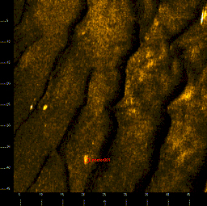

| Target Elements | ||
| Target Image | Target Info | User Entered Info |
 |
Target: Lobster001 Sonar Time at Target: 07/10/2009 15:45:08 Target Capture Time Local: 07/10/09 15:01:44 Target Capture Time UTC: 07/10/09 19:01:44 Target Click Position (GEO): 43° 03.94914' N 070° 42.29927' W Target Click Position (UTM84-19N): N:4769534.57 E:361176.26 Acoustic Source File: C:\Documents and Settings\schwehr\Desktop\UNH-K3000\Line-20090710_114002.xtf, Ping:13475 Horizontal range to target: 33.41 meters to Stbd side Slant range to target: 35.43 meters to Stbd side Event Number: 0 Line Name: Line-20090710_114002 |
Target Description: Lobster Pot on sand waves Target Height =0.00 Meters Target Length: 1.28 Meters Target Shadow: 0.00 Meters Target Width: 1.02 Meters User Classification (1): lobsterpot |